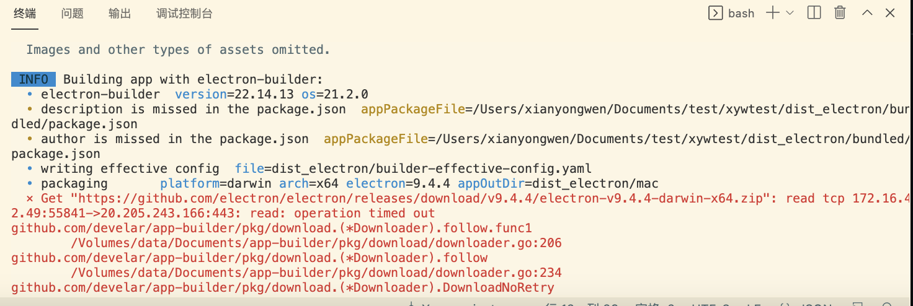
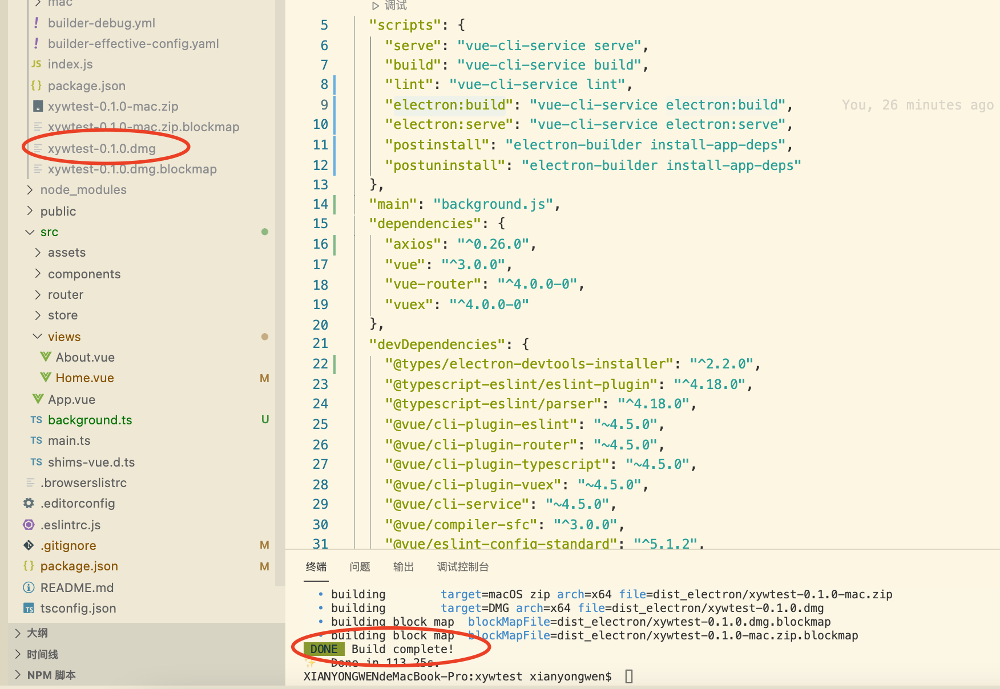
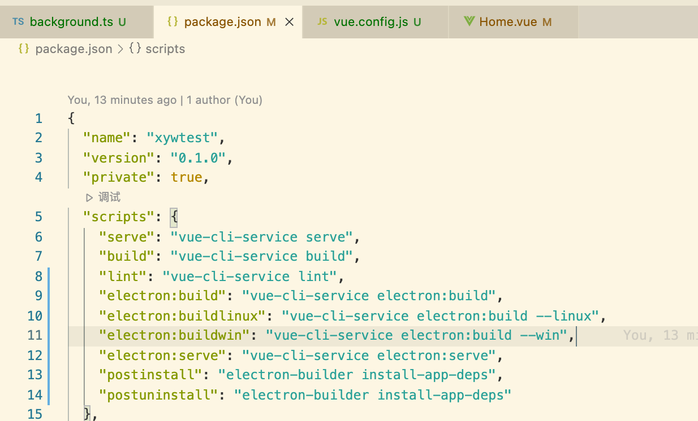
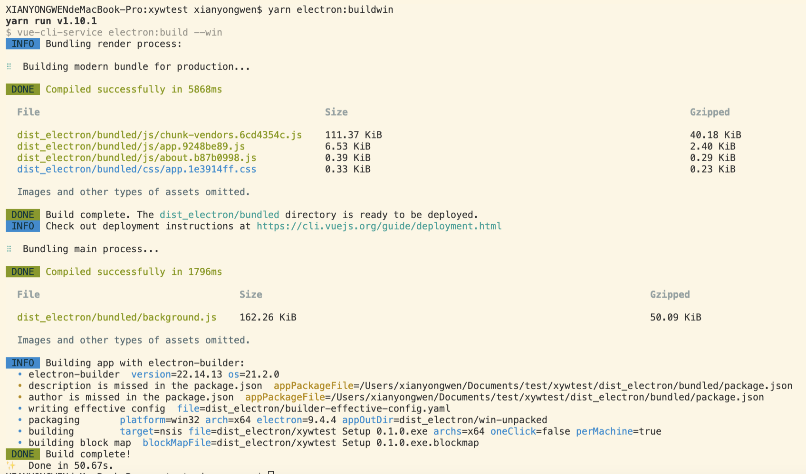

Electron应用打包
我们首先按照Vue CLI Plugin Electron Builder的默认配置，打包一个试试
|
|

如果遇到上面这种报错，就是下载https://github.com/electron/electron/releases/download/v9.4.4/electron-v9.4.4-darwin-x64.zip超时了，提示已经说的很清楚了，于是我搭起梯子再试，这里重申一下梯子对于前端的重要性。

因为我的电脑是macbook，所以项目自动打包出macOs安装包，但是如果我要打包windows和linux的呢，我要找一台windows和linux电脑再搭一次项目，编译出来吗？不需要的，只要配置好electron-builder就可以了，mac电脑可以通过安装一些依赖编译出windows和linux的安装包，反之则不行，因为编译出mac的安装包需要依赖xcode。
我们在package.json的script标签下新建两个脚本，用于编译windows和linux的程序。
|
|
 然后在public下放至应用的图标文件，png格式用于mac与linux，ico格式用于windows，这里要注意了，ico格式的尺寸不能小于256*256，否则会报错编译不通过。在根目录下新建文件vue.config.js
|
|
跑如下编译指令
|
|
如下图所示，编译成功，linux操作相同，不再贴步骤。 
文章作者 xianyongwen
上次更新 2020-12-20